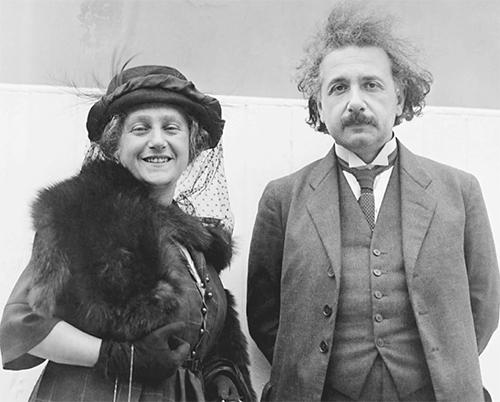

Cùng với Elsa, tháng Sáu năm 1922
Khi còn trẻ, trong một bức thư gửi cho mẹ của người bạn gái đầu tiên, Einstein đã nói trước rằng niềm vui trong khoa học sẽ là nơi ông trú ngụ và né tránh những cảm xúc đau đớn của mình. Đúng là như vậy. Cuộc chinh phục Thuyết Tương đối rộng của ông tỏ ra dễ dàng hơn là việc tìm công thức giải quyết các áp lực trong gia đình.
Các áp lực này là một tổ hợp phức tạp. Vào thời điểm ông đang hoàn tất các phương trình trường – tuần cuối cùng của tháng Mười một năm 1915 – con trai Hans Albert của ông nói với Michele Besso rằng cậu ta muốn ở với cha mình trong dịp lễ Giáng sinh, tốt nhất là trên núi Zugerberg hoặc nơi nào đó hoang dã như thế. Nhưng đồng thời cậu cũng viết cho cha mình một bức thư cáu kỉnh nói rằng cậu không muốn ông đến Thụy Sĩ chút nào cả.
Giải thích được mâu thuẫn này thế nào? Hans Albert giằng co giữa hai suy nghĩ – rốt cuộc thì lúc đó cậu mới chỉ là một cậu bé 11 tuổi – có thái độ mâu thuẫn mạnh mẽ đối với cha mình. Điều đó chẳng có gì đáng ngạc nhiên. Einstein mãnh liệt, đầy sức sống và đôi khi rất cuốn hút. Ông cũng thờ ơ, đãng trí và tự tách mình khỏi cậu con trai cả về khoảng cách vật lý lẫn tâm hồn, và con trai ông lại được giám hộ bởi một người mẹ hay cưng chiều con, nhưng luôn cảm thấy tủi nhục.
Sự kiên nhẫn ngoan cường mà Einstein thể hiện khi xử lý các vấn đề khoa học ngang bằng sự thiếu kiên nhẫn của ông khi xử lý những rắc rối riêng tư. Vì vậy, ông thông báo cho Hans Albert rằng ông sẽ hủy chuyến đi đó. Vài ngày sau khi kết thúc bài thuyết trình cuối cùng về thuyết tương đối rộng, Einstein viết cho con trai: “Giọng nghiệt ngã trong bức thư của con khiến cha rất buồn. Cha thấy rằng chuyến thăm của cha chẳng mang lại niềm vui nào cho con, vì vậy, cha nghĩ không nên mất công ngồi tàu suốt 2 tiếng 20 phút [để đi đến chỗ con].”
Ngoài ra cũng có vấn đề liên quan đến một món quà Giáng sinh. Hans Albert bắt đầu mê trượt tuyết, và Marić tặng cho cậu bé một bộ đồ trị giá 70 franc. Cậu bé viết: “Mẹ mua chúng cho con với điều kiện là cha có đóng góp. Con sẽ xem đây là quà Giáng sinh.” Chuyện này khiến Einstein không vui. Ông trả lời, ông sẽ cho cậu tiền, “nhưng cha quả thật nghĩ rằngmột món quà xa xỉ trị giá 70 franc không phù hợp với tình cảnh sống khiêm tốn của chúng ta”. Einstein viết, nhấn mạnh cụm từ in nghiêng bằng cách gạch chân.
Besso sắm vai mà ông tự gọi là “mục sư” hòa giải. Besso nói: “Anh không nên công kích thằng bé gay gắt như thế.” Besso tin rằng nguồn gốc của xích mích này là Marić, nhưng ông cũng đề nghị Einstein nhớ rằng bà “không chỉ có mặt xấu, mà còn có cả mặt tốt nữa”. Besso khuyên ông hãy hiểu là mọi chuyện khó khăn với Marić đến thế nào khi dính đến những chuyện liên quan tới ông. “Vai trò là vợ của một thiên tài không bao giờ dễ dàng cả.” Trong trường hợp của Einstein, điều đó chắc chắn đúng.
Vấn đề thật sự về chuyến đi thăm theo gợi ý của Einstein một phần là do hiểu lầm. Einstein cho rằng kế hoạch ông gặp con trai mình ở nhà Besso được thu xếp là vì Marić và Hans Albert đều muốn thế. Thế nhưng, đúng hơn thì Hans Albert không muốn trở thành người ngoài cuộc khi cha cậu và Besso trao đổi về vật lý. Trái lại, cậu ta muốn cha trao đổi với mình.
Marić cuối cùng cũng viết thư để nói rõ vấn đề, điều này làm Einstein đành vui lòng. Ông nói: “Tôi vốn hơi thất vọng khi không được gặp riêng Albert mà lại phải gặp dưới sự trông chừng của Besso.”
Vì vậy, Einstein lại lên kế hoạch đi Zurich, và ông hứa rằng đó sẽ là một trong nhiều chuyến đi gặp con trai. Ông nói: “[Hans] Albert84 giờ đang ở độ tuổi mà tôi có thể có ý nghĩa với nó. Tôi muốn dạy cho nó cách nghĩ, xét đoán và hiểu rõ mọi việc một cách khách quan.” Một tuần sau, trong một bức thư khác gửi Marić, ông khẳng định lại rằng ông rất vui về chuyến đi, “vì tôi sẽ có chút ít cơ hội làm Albert vui lòng bằng việc đó”. Tuy nhiên ông cũng nói thêm, có phần hơi châm chích: “Xem con có vui mừng chào đón tôi không đã. Tôi rất mệt mỏi, quá tải và không chịu đựng nổi những nỗi lo âu và thất vọng mới.”
Mọi chuyện không được như mong đợi. Sự mệt mỏi của Einstein còn kéo dài suốt một thời gian, và cuộc chiến khiến việc đi qua biên giới nước Đức trở nên khó khăn. Hai ngày trước lễ Giáng sinh năm 1915, thời điểm mà Einstein dự định khởi hành đi Thụy Sĩ, ông viết một bức thư cho con trai. Ông nói: “Mấy tháng qua cha đã phải làm việc vất vả đến mức cha cần phải nghỉ ngơi ngay trong kỳ nghỉ Giáng sinh này. Ngoài điều này ra, hiện nay việc đi qua biên giới cũng không dễ dàng gì vì biên giới gần như đã bị đóng lại. Bởi vậy cha không đến thăm con lúc này được.”
Einstein ở nhà suốt dịp Giáng sinh. Hôm Giáng sinh, ông lấy ra từ chiếc cặp sách một số bản vẽ mà Hans Albert đã gửi cho ông, và viết cho cậu bé một tấm bưu thiếp nói rằng chúng làm ông vui đến thế nào. Ông hứa ông sẽ đến thăm con vào lễ Phục sinh, và bày tỏ niềm vui khi biết con trai ông thích chơi piano. “Có lẽ con có thể tập chơi một bản nào đó có thể chơi cùng vĩ cầm, sau đó chúng ta có thể cùng chơi nhạc vào lễ Phục sinh khi chúng ta ở bên nhau.”
Sau khi ông và Marić ly thân, ban đầu Einstein quyết định không tìm cách ly hôn. Một trong những nguyên nhân là ông không muốn cưới Elsa. Quan hệ tình cảm không bị ràng buộc thích hợp với ông hơn. Ngày hôm sau khi trình bày bài giảng đỉnh cao vào tháng Mười một năm 1915, Einstein viết cho Zangger: “Những sức ép buộc tôi phải cưới đến từ cha mẹ của chị họ tôi, và có thể quy chủ yếu là cho sự phù phiếm vẫn còn sống động trong thế hệ cũ, dù quả đúng là có thêm thành kiến về đạo đức nữa. Nếu tôi để mình rơi vào cái bẫy ấy một lần nữa, thì cuộc đời tôi sẽ lại trở nên quá phức tạp, và trên hết, đó hẳn là một đòn giáng mạnh vào những đứa con trai của tôi. Do đó, tôi không thể để mình bị lay chuyển bởi những khuynh hướng tình cảm hay nước mắt của ai, mà phải luôn là chính mình.” Đó là một giải pháp mà ông cũng nhắc lại với Besso.
Besso và Zangger đồng ý rằng ông không nên tìm cách ly dị. Besso viết cho Zangger: “Quan trọng là Einstein hiểu rằng những người bạn trung thành nhất của anh ấy xem việc ly dị và tái hôn là điều vô cùng xấu xa.”
Nhưng Elsa và gia đình bà tiếp tục thúc giục. Vì vậy, vào tháng Hai năm 1916, Einstein viết cho Marić đề nghị, thật ra là cầu xin bà đồng ý ly dị, để họ có thể đường ai nấy đi. Ông gợi ý, thỏa thuận ly thân mà họ lập ra với sự giúp đỡ của Fritz Haber có thể dùng làm cơ sở cho việc ly dị. Ông hứa hẹn: “Chắc chắn là còn có những chi tiết sẽ làm cô hài lòng.” Bức thư này của ông cũng có cả phần hướng dẫn làm sao để các cậu con trai của họ không bị thiếu canxi.
Khi Marić phản đối, Einstein trở nên kiên quyết hơn. Ông nói: “Đối với cô, nó chỉ thuần túy là hình thức. Tuy nhiên, đối với tôi, đó là bổn phận.” Ông thông báo cho Marić rằng Elsa có hai người con gái và danh tiếng cũng như cơ hội của họ sẽ bị tổn hại bởi “tin đồn” lưu truyền về mối quan hệ bất hợp pháp giữa mẹ họ và Einstein. Ông nói với Marić: “Đây là gánh nặng với tôi, và tôi phải sửa sai bằng một đám cưới chính thức, hãy thử một lần tưởng tượng cô ở vào hoàn cảnh của tôi mà xem.”
Để dụ dỗ, ông đề nghị tăng thêm tiền chu cấp. Ông viết cho Marić: “Cô sẽ có lợi từ sự thay đổi này. Tôi muốn làm nhiều hơn những gì mình phải làm lúc trước.” Ông chuyển 6.000 mark vào quỹ cho các con, và tăng số tiền sinh hoạt phí cho bà lên 5.600 mark mỗi năm. “Bằng cách biến thành một người tằn tiện, khổ sở, tôi đang chứng tỏ với cô rằng sự sung túc của các con là điều có ý nghĩa nhất đối với tôi, hơn tất thảy mọi thứ trên đời.”
Đổi lại, ông muốn có quyền đưa các con đến Berlin thăm ông. Ông hứa rằng chúng sẽ không gặp Elsa. Ông thậm chí còn hứa thêm một điều đáng ngạc nhiên: ông sẽ không sống với Elsa dù họ cưới nhau. Thay vào đó, ông sẽ có căn hộ riêng. “Vì tôi sẽ không bao giờ từ bỏ cuộc sống một mình, đó là một sự may mắn không sao kể xiết.”
Marić không đồng ý cho ông quyền được gặp các con ở Berlin. Nhưng bà miễn cưỡng đồng ý – hoặc chí ít là Einstein nghĩ vậy – cho phép bắt đầu các cuộc trao đổi về việc ly dị.
Như đã hứa với Hans Albert, đầu tháng Tư năm 1916, Einstein đến Thụy Sĩ trong một kỳ nghỉ kéo dài ba tuần, ông ở một khách sạn gần ga tàu Zurich. Ban đầu, mọi thứ diễn ra rất tốt đẹp. Các cậu bé đến gặp và chào đón ông một cách vui vẻ. Từ khách sạn mình ở, ông gửi cho Marić một lá thư cảm ơn:
Tôi xin khen ngợi cô về tình trạng sức khỏe tốt của các con trai chúng ta. Chúng đều khỏe mạnh về cả thể chất lẫn tinh thần đến mức tôi không mong gì hơn. Và tôi biết phần lớn điều đó là nhờ công sức nuôi dưỡng của cô. Tôi cũng cảm ơn vì cô không khiến bọn trẻ xa lánh tôi. Chúng đến gặp tôi một cách thật tự nhiên và đáng yêu.
Marić gửi lời rằng bà muốn đích thân gặp Einstein. Mục đích của bà là đảm bảo rằng ông thật sự muốn ly dị và không đơn thuần là bị thúc ép từ phía Elsa. Cả Besso và Zangger đều cố gắng thu xếp cuộc gặp đó nhưng Einstein từ chối. Ông viết trong một bức thư gửi Marić: “Việc gặp mặt trao đổi giữa chúng ta chẳng có ích gì, nó chỉ khơi lại những vết thương cũ.”
Einstein đưa một mình Hans Albert đi tham quan 10 ngày theo kế hoạch tại khu nghỉ dưỡng trên núi, từ nơi đó có thể nhìn xuống hồ Lucerne, đúng như mong muốn của cậu. Ở đó, một cơn bão tuyết cuối mùa khiến họ chỉ có thể quanh quẩn ở nhà nghỉ, ban đầu cả hai đều hài lòng. Einstein viết cho Elsa: “Cha con anh gặp một trận tuyết ở Seelisberg nhưng cả hai đều rất vui. Thằng bé làm anh thấy vui, đặc biệt là với những câu hỏi thông minh và kiểu cách không đòi hỏi của nó. Không có sự bất hòa nào giữa cha con anh.” Không may thay, chẳng mấy chốc thời tiết, và có lẽ cảm giác bên nhau trở nên khiên cưỡng và nặng nề, họ trở lại Zurich sớm hơn vài ngày.
Trở lại Zurich, những căng thẳng trỗi dậy. Một buổi sáng nọ, Hans Albert đến gặp cha mình tại viện vật lý để xem một thí nghiệm. Đó là một hoạt động thú vị, nhưng khi về ăn trưa, cậu giục cha ghé qua nhà và ít nhất chào xã giao Marić.
Einstein từ chối. Hans Albert, lúc đó sắp 12 tuổi, giận dữ nói rằng cậu ta sẽ không trở lại để hoàn tất thí nghiệm vào buổi chiều nếu cha không động lòng. Einstein nhất quyết từ chối. Ông nói lại với Elsa một tuần sau đó, vào ngày ông rời Zurich: “Đó là cách sự việc đã tiếp diễn. Và kể từ đó anh không còn gặp đứa nào nữa.”
Từ sau đó, Marić rơi vào tình trạng suy yếu cả về tinh thần và thể chất. Trong tháng Bảy năm 1916, tim bà có một loạt các triệu chứng bất ổn dù không nghiêm trọng, lại mang nỗi lo âu cực độ; bác sỹ khuyên bà nên nằm tĩnh dưỡng. Những người con của họ đến ở nhà Besso, rồi đến Lausanne, tại đây chúng ở với bạn của Marić là Helene Savić khi ấy đang tránh chiến tranh ở đó.
Besso và Zangger cố gắng thuyết phục Einstein rời Berlin để ở với các con nhưng Einstein từ chối. Ông viết cho Besso: “Nếu tôi đến Zurich thì vợ tôi sẽ đòi gặp tôi. Tôi phải từ chối điều này, một phần là vì quyết tâm không gì thay đổi được, phần nữa là vì tôi không muốn cô ta lo lắng thêm. Ngoài ra, các anh biết rằng mối quan hệ cá nhân giữa các con tôi và tôi đã xấu đi nhiều trong kỳ nghỉ lễ Phục sinh (sau một khởi đầu rất hứa hẹn) đến mức tôi không biết rằng liệu sự hiện diện của tôi có giúp chúng vững tâm hay không.”
Einstein cho rằng bệnh tình của vợ mình chủ yếu là do tâm lý và thậm chí có lẽ một phần là giả tạo. Ông hỏi Zangger: “Liệu thần kinh có phải là căn nguyên của tất cả những chuyện này hay không?” Với Besso, ông nói cùn hơn: “Tôi nghi ngờ rằng người đàn bà đó đang lừa hai người tốt bụng các anh đấy. Cô ta không e ngại sử dụng mọi cách khi muốn đạt được điều gì đâu. Các anh không hiểu nổi sự xảo quyệt vốn là bản chất của một người đàn bà như vậy đâu.” Mẹ của Einstein cũng đồng tình. Bà nói với Elsa: “Mileva không bao giờ ốm như cháu nghĩ đâu.”
Einstein nhờ Besso thường xuyên thông báo cho ông về tình hình, và thể hiện tính hài hước khoa học bằng cách nói rằng những báo cáo của ông không cần có “tính liên tục” logic bởi “điều này là chấp nhận được trong thời kỳ thuyết lượng tử”. Besso không tán đồng. Ông viết cho Einstein một bức thư gay gắt nói rằng tình trạng của Marić không phải là “lừa dối” mà là do quá căng thẳng. Anna, vợ của Besso, thậm chí còn cay nghiệt hơn, thêm cả một phần tái bút vào bức thư gửi cho Einstein, bà dùng một từ lạnh lùng: Sie85.
Einstein rút lại cáo buộc Marić giả ốm, nhưng cho rằng nỗi đau khổ về cảm xúc của bà không chính đáng. Ông viết cho Besso: “Cô ta có một cuộc sống không phải lo nghĩ, có hai cậu bé quý báu bên mình, có thể làm những điều mình thích với thời gian của mình, và cứ tỏ vẻ ngây thơ vô tội.”
Einstein cảm thấy đặc biệt bị xúc phạm bởi phần tái bút lạnh lùng của Anna Besso mà ông lầm tưởng là của Michele. Vì vậy, ông viết trong phần tái bút của mình: “Chúng ta đã hiểu nhau rất rõ trong hơn 20 năm. Đến giờ tôi thấy anh bộc lộ một thái độ gay gắt đối với tôi chỉ vì một người phụ nữ không liên quan gì tới anh cả. Thế đấy!” Cuối ngày hôm đó ông nhận ra rằng ông đã nhầm phần tái bút cay nghiệt của Anna là của chồng bà, và nhanh chóng gửi một lá thư xin lỗi.
Theo lời khuyên của Zangger, Marić điều trị một viện điều dưỡng. Einstein vẫn từ chối tới Zurich, dù các con ông phải ở cùng bảo mẫu; nhưng ông cũng nói với Zangger rằng ông sẽ thay đổi ý định nếu Zangger thấy nên như vậy. Zangger không nghĩ thế. “Sự căng thẳng từ hai phía quá lớn,” Zangger giải thích với Besso, và Besso đồng ý.
Dù có thái độ lãnh đạm, nhưng Einstein yêu các con trai của mình và sẽ luôn chăm lo cho chúng. Ông đề nghị Zangger nói với các con của ông rằng ông sẽ nuôi dạy chúng nếu mẹ chúng qua đời. Ông quả quyết: “Tôi sẽ tự mình nuôi hai đứa. Chúng sẽ được chính tôi dạy dỗ tại nhà hết mức có thể.” Trong nhiều bức thư suốt sáu tháng sau đó, Einstein bày tỏ những ý định và mơ tưởng khác nhau về việc dạy các con tại nhà, những điều ông sẽ dạy, và thậm chí cả kiểu đi của các cậu bé. Ông viết cho Hans Albert, đảm bảo với cậu rằng “cha luôn nghĩ về hai con”.
Nhưng Hans Albert tức giận hoặc bị tổn thương đến nỗi cậu không hồi đáp những bức thư của cha mình nữa. Einstein than vãn với Besso: “Tôi tin rằng thái độ của nó đối với tôi đã xuống dưới điểm đóng băng. Nếu rơi vào hoàn cảnh đó, chắc tôi cũng cư xử giống thế.” Sau ba bức thư gửi cho con trai không được hồi âm trong ba tháng, Einstein buồn rầu viết cho cậu bé: “Con không còn nhớ cha của mình nữa sao? Chẳng lẽ chúng ta không bao giờ gặp lại nhau nữa sao?”
Cuối cùng, cậu bé cũng hồi âm bằng việc gửi một bức ảnh về hình con thuyền mà cậu khắc trên gỗ. Cậu cũng kể lại chuyện mẹ đã xuất viện về nhà. “Khi mẹ về, chúng con đã ăn mừng. Con đã tập bản xô-nát của Mozart và Tete đã học một bài hát.”
Einstein quả thật có nhượng bộ trước hoàn cảnh đáng buồn đó: ông quyết định dừng yêu cầu Marić ly dị, ít nhất vào thời điểm đó. Việc đó như là một liều thuốc giúp bà phục hồi. Ông nói với Besso: “Tôi sẽ đảm bảo cô ta không bị tôi gây lo âu nào nữa. Tôi đã bỏ thủ tục ly dị. Giờ thì tập trung vào các vấn đề khoa học thôi!”
Quả thật, mỗi khi chuyện riêng tư khiến ông nặng gánh, ông lại lao vào công việc. Nó che chở ông, cho phép ông được giải phóng. Như ông nói với Helene Savić, có thể với ý định để bà truyền đạt lại cho Marić, rằng ông quyết định rút vào cuộc chiêm ngẫm khoa học. “Tôi giống như một người viễn thị bị cuốn hút bởi chân trời rộng lớn và bực mình khi trước mắt có vật mờ đục cản tầm nhìn xa của mình.”
Vì vậy, ngay cả khi cuộc chiến cá nhân đang trở nên dữ dội, khoa học vẫn giúp ông khuây khỏa. Năm 1916, ông bắt đầu viết lại về lượng tử. Ông cũng viết một bài mô tả chính thức cho thuyết tương đối rộng, một bài viết toàn diện hơn và dễ hiểu hơn một chút so với những gì đã được trình bày trong những bài giảng hằng tuần trong cuộc chạy đua với Hilbert vào tháng Mười một năm trước đó.
Ngoài ra, ông cũng viết một cuốn sách thậm chí dễ hiểu hơn dành cho người không chuyên, Thuyết Tương đối Hẹp và Rộng86, một cuốn sách vẫn giữ được sức hút cho đến ngày nay. Để đảm bảo rằng người bình thường cũng có thể hiểu được nó, ông đọc to từng trang cho Margot, con gái của Elsa, thường xuyên dừng lại để hỏi xem cô có thật sự hiểu hay không. Cô lúc nào cũng trả lời: “Có ạ, thưa bác Albert” dù (như cô tâm sự với người khác) cô thấy toàn bộ những điều đó hoàn toàn là nói nhảm.
Khả năng sử dụng khoa học làm chỗ trú ngụ để né tránh những cảm xúc cá nhân đau khổ là chủ đề cuộc nói chuyện của ông tại lễ kỷ niệm ngày sinh lần thứ 60 của Max Planck. Tuy nói về Planck, nhưng dường như nó truyền tải nhiều hơn về Einstein. Einstein phát biểu: “Một trong những động lực mạnh nhất dẫn dắt con người đến với nghệ thuật và khoa học là mong muốn thoát khỏi cuộc sống hằng ngày vốn tàn bạo đến đau đớn và ảm đạm một cách vô vọng. Những người này lấy vũ trụ và cấu tạo của nó làm trung tâm cho đời sống tâm cảm của mình, để được tìm thấy sự thanh thản và lòng tự tin mà họ không thể tìm thấy trong cái xoáy nước hạn hẹp của những trải nghiệm riêng tư.”
Đầu năm 1917, đến lượt Einstein bị ốm. Sức khỏe của ông xuống dốc với những cơn đau dạ dày mà lúc đầu ông nghĩ là do ung thư gây ra. Giờ thì vì sứ mệnh của ông đã hoàn thành, cái chết không còn khiến ông sợ hãi. Ông nói với Freundlich rằng ông không lo lắng về cái chết vì đã hoàn tất thuyết tương đối của mình.
Trái lại, Freundlich lo lắng cho người bạn mới chỉ 38 tuổi. Ông đưa Einstein tới bác sỹ, vị bác sỹ chẩn đoán đó là bệnh dạ dày kinh niên, một căn bệnh càng trở nên trầm trọng do tình trạng thiếu thốn thực phẩm của thời chiến. Ông ta yêu cầu Einstein ăn kiêng bốn tuần, chỉ ăn các đồ làm từ lúa mì như mì ống và bánh mì zwieback.
Những cơn đau dạ dày khiến ông sa sút cả bốn năm sau đó lẫn suốt quãng đời còn lại của ông. Ông sống một mình và gặp phải vấn đề với việc phải ăn uống sao cho đúng. Từ Zurich, Zangger gửi những gói đồ ăn để giúp Einstein ăn kiêng theo đơn kê của bác sỹ, nhưng chỉ trong hai tháng, Einstein đã giảm hơn 20 cân. Cuối cùng, vào mùa hè năm 1917, Elsa đã thuê được căn hộ thứ hai trong tòa nhà mà bà ở, và đưa Einstein đến đó làm hàng xóm của bà, để bà trông nom và bầu bạn với ông.
Elsa rất thích thú tìm tòi những món ăn làm ông vừa ý. Bà tháo vát và đủ giàu có để tìm được trứng, bơ và bánh mì mà ông thích dù cuộc chiến khiến những thứ đó khan kiếm. Hằng ngày, bà nấu ăn cho ông, chiều chuộng ông, thậm chí tìm mua xì-gà cho ông. Cha mẹ của bà cũng giúp đỡ bằng cách cho cả hai người họ đến ăn cùng.
Sức khỏe người con trai út của ông, Eduard, cũng không ổn định. Một lần nữa, cậu lại bị sốt và đầu năm 1917, cậu bị viêm phổi. Sau khi nhận được chẩn đoán bi quan, Einstein than vãn với Besso: “Tình trạng thằng nhỏ nhà tôi khiến tôi rất buồn. Nó sẽ khó có thể thành người phát triển bình thường được. Ai biết được liệu có tốt hơn cho nó hay không nếu nó ra đi trước khi hiểu rõ về thế giới.”
Với Zangger, ông nói ông suy nghĩ về “phương pháp của người Sparta” – bỏ những đứa trẻ đau ốm trên một ngọn núi cho chúng chết – nhưng sau đó ông khẳng định rằng không thể chấp nhận phương pháp như thế. Thay vào đó, ông hứa sẽ trả bất cứ giá nào để Eduard được chăm sóc, và ông đề nghị Zangger gửi cậu bé đến cơ sở điều trị tốt nhất. “Ngay cả nếu anh nhủ thầm với mình rằng mọi nỗ lực là vô ích, thì hãy cứ gửi nó đi để vợ tôi và Albert thấy rằng việc gì đó đang được thực hiện.”
Mùa hè năm đó, Einstein trở lại Thụy Sĩ để đưa Eduard đến một viện điều dưỡng tại ngôi làng Arosa. Khả năng sử dụng khoa học để vượt lên những nỗi đau cá nhân được bộc lộ trong một bức thư ông gửi cho người bạn là nhà vật lý Paul Ehrenfest của mình: “Thằng bé rất ốm yếu, và phải ở Arosa một năm. Vợ tôi cũng đau ốm. Lo lắng và nhiều lo lắng hơn nữa. Tuy nhiên tôi đã tìm ra một cách hay để khái quát định luật lượng tử của Sommerfeld – Epstein87.”
Hans Albert đi cùng cha trong chuyến đi đưa Eduard đến Arosa, sau đó cậu đến thăm cha mình khi đó đang ở với gia đình Maja và Paul Winteler. Ở đó, cậu thấy cha mình nằm liệt giường với những cơn đau dạ dày nhưng chú Paul đã đưa cậu đi leo núi. Dần dà, qua những lần hàn gắn, mối quan hệ của Einstein với cậu con trai lớn đã tốt đẹp trở lại. Ông nói với Zangger: “Lá thư từ Albert là niềm vui lớn nhất mà tôi có trong năm qua. Tôi cảm thấy mối tình thân của chúng tôi được ban phước.” Những lo lắng về tài chính dần giảm đi. “Tôi nhận được giải thưởng trị giá 1.500 cua-ron88 của Viện Hàn lâm Vienna, chúng ta có thể dùng số tiền này để chữa bệnh cho Tete.”
Lúc này ông đã chuyển về ở cùng tòa nhà với Elsa, và bà đang chăm sóc để ông phục hồi sức khỏe, nên vấn đề ly dị Marić lại nổi lên là điều khó tránh. Đầu năm 1918, việc đó đã xảy ra. Ông viết: “Nguyện vọng muốn thu xếp chuyện cá nhân khiến tôi phải đặt vấn đề ly dị cô lần nữa. Tôi quyết tâm làm mọi thứ để có thể thực hiện việc này.” Lần này, đề nghị tài chính của ông rất hào phóng. Ông sẽ trả cho bà 9.000 mark thay vì 6.000 một năm, với điều kiện 2.000 mark sẽ được đưa vào quỹ cho bọn trẻ89.
Sau đó ông thêm vào một lời đề xuất gây ngạc nhiên. Ông tin rằng một ngày nào đó ông sẽ đoạt giải Nobel. Mặc dù cộng đồng khoa học chưa hoàn toàn hiểu rõ Thuyết Tương đối hẹp, chứ chưa nói đến Thuyết Tương đối rộng hãy còn quá mới và chưa được chứng minh của ông, song cuối cùng một ngày nào đó cộng đồng này sẽ hiểu. Hoặc là kiến giải đột phá của ông về lượng tử ánh sáng và hiệu ứng quang điện sẽ được công nhận. Từ suy nghĩ đó, ông đưa ra một đề nghị ấn tượng cho Marić: “Giải thưởng Nobel – trong trường hợp chúng ta đã ly dị và trong trường hợp giải thưởng này được trao cho tôi – sẽ được chuyển toàn bộ cho cô.”
Đó là một cuộc đánh cược hấp dẫn xét về mặt tài chính. Giải Nobel lúc đó, cũng như bây giờ, rất lớn, thật ra là vô cùng lớn. Tại thời điểm năm 1918, nó trị giá khoảng 135.000 kronor Thụy Điển hay 225.000 mark Đức – gấp 37 lần số tiền Marić kiếm được mỗi năm. Hơn nữa, đồng mark của Đức bắt đầu sụt giá trong khi giải thưởng Nobel được trả bằng tiền Thụy Sĩ ổn định. Cay đắng nhất là, có sự công bằng mang tính biểu tượng ở đây: bà đã giúp Einstein phần toán học, đọc soát và là chỗ dựa hậu phương cho những bài nghiên cứu năm 1905 của ông, và lúc này bà có thể được hưởng phần nào từ phần thưởng đó.
Ban đầu bà rất tức giận. Bà trả lời: “Chính xác là hai năm trước, những bức thư như vậy đã đẩy tôi tới bờ vực đau khổ mà đến giờ tôi vẫn chưa thể vượt qua. Tại sao anh cứ giày vò tôi mãi không thôi thế? Tôi thật sự không đáng phải chịu đựng điều này từ anh.”
Nhưng vài ngày sau đó, bà bắt đầu đánh giá tình hình một cách khách quan hơn. Cuộc sống của bà đã chạm đáy. Bà phải chịu đau đớn, lo âu và bị trầm cảm. Cậu con út phải ở trong viện điều dưỡng. Người em gái trước đó đến giúp bà bị trầm cảm và phải vào nhà thương điên. Còn em trai bà, là lính cứu thương trong quân đội Áo, đã bị quân Nga bắt sống. Quả thật kết thúc những cuộc chiến với chồng và nhận cơ hội bảo đảm về mặt tài chính là điều tốt nhất cho bà. Vì vậy, bà đã bàn bạc lựa chọn này với người hàng xóm Emil Zürcher, một luật sư và cũng là bạn của bà.
Vài ngày sau, bà quyết định chấp nhận thỏa thuận này. Bà trả lời: “Hãy nhờ luật sư của anh viết cho tiến sỹ Zürcher về việc anh ta định sẽ có những khoản mục gì, hợp đồng sẽ thế nào. Tôi phải để những việc rắc rối này cho những người khách quan. Tôi không muốn làm kẻ cản đường hạnh phúc của anh nếu anh đã quyết tâm đến vậy.”
Các cuộc đàm phán được tiến hành qua thư từ và các bên thứ ba suốt tháng Tư. Có lúc, ông than thở: “Tôi tò mò cái gì sẽ kéo dài lâu hơn, cuộc chiến tranh thế giới hay các thủ tục ly dị của chúng ta.” Nhưng vì mọi thứ đang diễn ra đúng ý muốn của ông nên ông vui mừng nói thêm: “So ra thì vấn đề nhỏ này của chúng ta vẫn dễ chịu hơn nhiều. Cho tôi gửi lời chào thân ái đến cô và nụ hôn đến các con.”
Vấn đề chính là tiền. Marić phàn nàn với một người bạn rằng Einstein keo kiệt (thật ra không phải như thế) vì Elsa. Marić cáo buộc: “Elsa rất tham lam. Chị gái và em gái của cô ta rất giàu và cô ta luôn ghen tị với họ.” Những lá thư gửi đi gửi lại cho nhau bàn đúng về việc số tiền nhận được từ giải Nobel trong tương lai sẽ được chuyển như thế nào, quyền lợi hai cậu con trai đối với số tiền đó, điều gì sẽ xảy ra nếu bà đi thêm bước nữa, và thậm chí ông sẽ bồi thường bao nhiêu trong trường hợp, chắc sẽ không xảy ra, ông không nhận được giải thưởng này.
Một vấn đề gây tranh cãi nữa là liệu các con trai ông có thể đến thăm ông ở Berlin hay không. Về chuyện này, Marić rất kiên quyết. Cuối cùng, vào cuối tháng Tư, Einstein chịu nhượng bộ điểm cuối cùng này. Ông nói: “Tôi nhượng bộ về việc bọn trẻ vì giờ tôi tin là cô muốn xử lý các vấn đề bằng cách hòa giải. Có thể sau này cô sẽ thấy rằng bọn trẻ có thể đến đây mà không phải e dè gì. Tại thời điểm này, tôi sẽ vẫn gặp chúng ở Thụy Sĩ.”
Về sức khỏe yếu ớt của Marić, Einstein đã cố đưa ra lựa chọn khác cho hai con trai: cho chúng sống ở vùng Lucerne gần đó với em gái ông, Maja và chồng bà là Paul Winteler. Gia đình Winteler sẵn lòng chăm sóc các cháu của mình, và một hôm họ đã đi tàu tới Bern để xem liệu có thể sắp xếp việc này được hay không. Nhưng khi họ đến, Zangger không có ở đó, và họ muốn gặp Zangger trước khi trao đổi mọi việc với Marić. Vì vậy, Paul đến gặp Anna, người em gái đã kết hôn với Michele Besso, để xem họ có phòng cho buổi tối đó hay không.
Ông định không cho Anna biết mục đích chuyến đi của họ vì bà có thái độ bảo vệ Marić và rất dễ phẫn nộ trước chuyện này. “Nhưng cô ta đoán được mục đích chuyến đi của chúng em,” Maja kể lại với Einstein. “Và khi Paul xác nhận những nghi ngờ của cô ta, thì một loạt những lời cáo buộc, trách móc và đe dọa tuôn ra.”
Vì vậy, Einstein viết một bức thư cho Anna nhằm cố gắng tranh thủ sự giúp đỡ của bà. Ông lập luận rằng với tình trạng hiện giờ, Marić “không đủ khả năng chu toàn việc nhà”. Ông cũng cho rằng sẽ là tốt nhất nếu Hans Albert đến sống với Maja và Paul. Eduard cũng có thể ở đây, hoặc ở lại viện điều dưỡng, nơi có không khí của vùng núi vốn có lợi cho đứa bé, đến khi sức khỏe của nó được cải thiện. Einstein sẽ thanh toán tất cả, bao gồm cả chi phí cho Marić ở viện điều dưỡng tại Lucerne, nơi mà ngày ngày bà có thể gặp các cậu con trai.
Không may là, Einstein đã mắc sai lầm khi kết thúc bức thư bằng những lời thuyết phục Anna giúp giải quyết tình hình để ông có thể kết hôn với Elsa và kết thúc sự xấu hổ mà mối quan hệ của họ gây ra cho các cô con gái của Elsa. Ông viết: “Hãy nghĩ đến hai cô gái trẻ mà việc lấy chồng của chúng trong tương lai có thể đang bị ảnh hưởng. Lúc nào đó xin hãy nói với Miza [Marić] giúp tôi và nói rõ với cô ta rằng việc đẩy cuộc sống của người khác vào những rắc rối một cách vô nghĩa như thế là tàn nhẫn đến thế nào.”
Anna phản bác lại rằng Elsa mới là thứ người ích kỷ. “Nếu Elsa không muốn chính mình bị tổn thương như thế, thì cô ta không nên theo đuổi anh quá đáng như vậy.”
Quả thật, Anna khó tính, và chẳng bao lâu sau bà cũng bất hòa với Marić. Marić phàn nàn với Einstein: “Cô ta cố xen vào chuyện của tôi theo lối bộc lộ ác ý tiềm ẩn trong con người.” Chí ít thì điều này cũng giúp cải thiện mối quan hệ trong gia đình Einstein. Ngay sau khi họ đồng thuận về các thỏa thuận ly dị, ông viết cho Marić: “Từ bức thư của cô, tôi thấy rằng cô cũng có những vấn đề với Anna Besso. Cô ta viết cho tôi những bức thư hỗn xược đến mức tôi đã phải cắt đứt liên lạc.”
Phải mất thêm vài tháng thì quyết định ly dị mới hoàn tất, nhưng lúc này các cuộc đàm phán đã xong xuôi, dường như ai cũng thấy nhẹ nhõm vì sẽ có một cái kết khép lại mọi thứ. Sức khỏe của Marić đã được cải thiện đủ để các cậu con trai vẫn ở với bà, và những bức thư qua lại giữa Berlin và Zurich trở nên thân thiện hơn. Ông nói với Zangger: “Một mối quan hệ dễ chịu đã hình thành giữa tôi và vợ qua những bức thư về việc ly dị. Đây đúng là một cơ hội tốt để hòa giải.”
Sự lắng dịu trong quan hệ của họ đồng nghĩa với việc Einstein có một lựa chọn cho kỳ nghỉ hè năm 1918: thăm các con trai ở Zurich hoặc có một kỳ nghỉ ít căng thẳng hơn với Elsa. Ông chọn đi nghỉ cùng với Elsa, một phần vì bác sỹ của ông khuyến cáo không nên đến những nơi cao; nên trong bảy tuần, ông và Elsa đã ở khu nghỉ dưỡng Aarenshoop ở vùng biển Baltic. Ông mang quyển sách Prolegomena của Immanuel Kant90, dành “nhiều giờ nghĩ về vấn đề lượng tử”, thư giãn và hồi phục sau những cơn đau dạ dày. Ông viết cho một người bạn: “Không có những cuộc điện thoại, không có trách nhiệm, chỉ có sự yên tĩnh tuyệt đối. Tôi nằm trên bờ biển như một chú cá sấu để cho ánh Mặt trời nướng chín mình, không xem một bài báo nào và không quan tâm đến cái gọi là thế giới.”
Từ kỳ nghỉ này, ông tìm cách làm nguôi Hans Albert, cậu bé đã viết thư nói rằng cậu nhớ cha. Cậu hỏi: “Ít nhất thì hãy viết cho con biết tại sao cha không đến.” Lời giải thích của Einstein thật đáng buồn và có tính phòng vệ:
Con có thể dễ dàng tưởng tượng những lý do khiến cha không thể đến. Mùa đông này cha ốm đến nỗi phải nằm liệt giường suốt hơn hai tháng trời. Mỗi bữa ăn phải được nấu riêng cho cha. Cha không cử động được. Vì vậy, cha không được phép đi bộ với con hay ăn tại khách sạn… Còn cả việc cha đã cãi nhau với cô Anna Besso, và cha không muốn biến thành gánh nặng cho chú Zangger; cuối cùng là cha không biết liệu việc cha đến có quan trọng với con hay không.
Con trai ông thông cảm. Cậu viết cho ông những lá thư đầy những tin tức và ý tưởng, bao gồm bản mô tả và tóm tắt các ý tưởng của cậu đối với quả lắc bên trong đường ray đung đưa và mạch điện ngắt mỗi khi con tàu dừng quá lâu.
Einstein đã trách Hans Albert, một cách thiếu công bằng, vì không tìm cách đến Đức thăm ông trong kỳ nghỉ. Việc đó sẽ buộc Marić phải bỏ quy định cấm những chuyến đi như vậy trong thỏa thuận ly thân trước đó của họ, và đáng buồn là điều này cũng không thực tế. Hans Albert viết: “Việc con đến Đức gần như còn khó hơn là việc cha đến chỗ con vì rốt cuộc con là người duy nhất trong gia đình đi mua sắm được.”
Vì vậy, Einstein với khao khát được gần gũi với các con hơn lại thấy mình phút chốc muốn về Zurich. Trong kỳ nghỉ hè ở Baltic năm 1918, ông xem xét một lời đề nghị kết hợp từ Đại học Zurich và trường Bách khoa Zurich. Nhà vật lý Edgar Meyer viết: “Anh có thể tự đề xuất cho mình một vị trí theo đúng ý anh.” Như Einstein viết đùa với Besso: “Tôi sẽ hạnh phúc biết bao nếu 18 năm trước tôi có được chức trợ giảng vô tích sự.”
Einstein thừa nhận rằng ông bị dằn vặt bởi quyết định đó. Zurich là “ngôi nhà thực sự” của ông, và Thụy Sĩ là đất nước duy nhất mà ông thấy thân thuộc. Thêm nữa, ông sẽ được ở gần các con.
Nhưng có một khó khăn. Nếu ông dọn đến ở gần chúng thì ông cũng phải ở gần mẹ chúng. Ngay cả đối với Einstein, một người giỏi trốn tránh các cảm xúc cá nhân, việc xây dựng cuộc sống với Elsa trong cùng một thành phố với người vợ thứ nhất sẽ chẳng dễ dàng gì. Ông tâm sự với Besso: “Những khó khăn cá nhân lớn nhất của tôi sẽ lại xảy ra nếu tôi sống ở Zurich, dù tôi rất muốn được ở gần các con.”
Elsa cũng kiên quyết phản đối ý định này, thậm chí là hoảng sợ. Bà xin Einstein hứa rằng điều đó sẽ không xảy ra. Einstein có lẽ khá quan tâm đến nguyện vọng của Elsa và không chuyển tới Zurich nữa.
Thay vào đó, ông làm điều mà ông thường né tránh: ông thỏa hiệp. Ông vẫn giữ vị trí của mình ở Berlin nhưng đồng ý nhận thêm chức giảng viên tại Zurich, nhờ đó, một năm hai lần, ông sẽ có những chuyến thăm dài cả tháng ở đó. Ông cho rằng đây là điều tốt nhất đối với ông.
Trong một động thái có vẻ như là quá đỗi thận trọng của người Thụy Sĩ, ban lãnh đạo của Zurich đã thông qua hợp đồng giảng dạy, theo đó họ sẽ trả chi phí cho ông, nhưng tạm thời không có thù lao, “để thử nghiệm”. Quả thật, họ rất thông minh. Những bài giảng của Einstein ban đầu được rất nhiều người đăng ký học, nhưng số người tham dự cứ giảm dần, cuối cùng khóa học bị hủy sau hai năm.
Einstein đã nửa đùa nửa thật hỏi Marić, điều gì sẽ kết thúc trước: cuộc chiến tranh thế giới hay các thủ tục ly dị của họ? Cuối cùng thì cả hai đều đi đến một cái kết lộn xộn vào cuối năm 1918. Khi đế chế Đức sụp đổ vào tháng Mười một năm đó, một cuộc nổi dậy của các thủy thủ ở Kiel đã nhanh chóng bùng lên thành một cuộc tổng đình công thu hút đông đảo quần chúng. Einstein viết trong nhật ký giảng dạy của mình vào ngày 9 tháng Mười một, ngày những người phản đối chiếm giữ tòa nhà Quốc hội và nhà vua thoái vị: “Buổi học phải hủy vì cuộc Cách mạng”. Bốn ngày sau, một ủy ban cách mạng gồm công nhân, sinh viên chiếm đóng Đại học Berlin, bắt giam hiệu trưởng và các trưởng khoa.
Với sự bùng nổ của cuộc chiến, lần đầu tiên trong đời Einstein đã trở thành người của công chúng, công khai ủng hộ chủ trương quốc tế, chủ nghĩa liên bang ở châu Âu và chống chủ nghĩa quân phiệt. Hòa bình đến đã hướng tư duy chính trị của Einstein vào các vấn đề mang tính trong nước và xã hội hơn hẳn trước.
Từ khi còn trẻ, ông đã mến mộ Jost Winteler và là một người bạn của Friedrich Adler. Einstein bị cuốn hút bởi cả lý tưởng của chủ nghĩa xã hội cũng như lý tưởng tự do cá nhân. Cuộc cách mạng ở Berlin – được lãnh đạo bởi những người theo chủ nghĩa xã hội, công đoàn của công nhân, người theo chủ nghĩa cộng sản và những người theo cánh tả – đã khiến ông đứng trước các lập trường khác nhau khi hai tư tưởng này bộc lộ mâu thuẫn.
Suốt phần đời còn lại của mình, Einstein sẽ trình bày một chủ nghĩa xã hội dân chủ có nền móng tự do, chống chuyên chế. Ông chủ trương bình đẳng, công bằng xã hội và cải cách chủ nghĩa tư bản. Ông là người bảo vệ quyết liệt cho những người yếu thế. Nhưng bất cứ nhà cách mạng nào nhắm đến khao khát thiết lập một chế độ chuyên chế, thì tình yêu bản năng mà Einstein dành cho tự do cá nhân sẽ thường khơi dậy trong ông một phản ứng bài trừ mạnh mẽ.
Con rể của ông đã viết về thái độ của Einstein trong những năm 1920 như sau: “Đối với ông, chủ nghĩa xã hội phản ánh khao khát luân lý là loại bỏ sự cách biệt sâu sắc giữa các tầng lớp xã hội và tạo ra một hệ thống kinh tế công bằng hơn. Nhưng ông không đồng ý với một chương trình theo đường lối chuyên chế. Ông đề cao tính phiêu lưu của sự đơn độc và niềm hạnh phúc mà tự do mang đến, nên không thấy một hệ thống đe dọa triệt tiêu tính cá nhân là hợp lý.”
Đây là một thái độ kiên định nơi ông. Otto Nathan91, một người theo chủ nghĩa xã hội, bạn thân và là người quản lý các tác phẩm chưa in của Einstein sau khi ông chuyển đến Mỹ, cho biết: “Xuyên suốt cuộc đời, triết lý chính trị cơ bản của Einstein không có thay đổi nào đáng kể. Ông hoan nghênh sự phát triển mang tính cách mạng của nước Đức năm 1918 vì sự quan tâm của ông đối với chủ nghĩa xã hội, và đặc biệt vì lòng nhiệt thành tuyệt đối của ông đối với dân chủ. Điểm cơ bản nơi tư duy chính trị của ông là sự công nhận phẩm giá của cá nhân và bảo vệ tự do chính trị cũng như tự do tri thức.”
Khi lực lượng sinh viên tham gia cách mạng ở Berlin bắt giam hiệu trưởng và các trưởng khoa, Einstein phải đưa triết lý này vào thực tiễn. Nhà vật lý Max Born nằm liệt gường vì bị cúm khi điện thoại reo ngày hôm đó. Đó là cuộc gọi từ Einstein. Ông đang định đến trường đại học để tìm cách thuyết phục thả hiệu trưởng và các trưởng khoa ra, và ông một mực muốn Born phải ra khỏi giường tham gia cùng ông. Họ cũng tranh thủ một người bạn nữa, nhà tâm lý học tiên phong Max Wertheimer92 của trường phái Gestalt, có lẽ với niềm tin rằng kiến thức chuyên môn của ông hữu ích hơn vật lý lý thuyết trong việc này.
Ba người đi tàu điện từ căn hộ của Einstein tới tòa nhà Quốc hội, nơi các sinh viên đang hội họp. Đầu tiên, họ bị một đám đông cản trở, nhưng đám đông tản ra khi nhận ra Einstein, rồi họ được đưa vào một phòng họp nơi xô-viết sinh viên đang họp.
Chủ tịch của xô-viết sinh viên chào mừng họ và đề nghị họ đợi trong khi nhóm này hoàn tất việc đưa ra các quy chế mới quản lý trường đại học. Sau đó, anh ta quay lại phía Einstein. “Trước khi chúng tôi lắng nghe những điều ngài muốn nói, giáo sư Einstein, liệu tôi có thể hỏi ý kiến của ngài về các quy định mới này không?”
Einstein im lặng một lúc. Một số người được huấn luyện để nói nước đôi ngay từ trong bụng mẹ sẽ cố gắng làm vui lòng người nghe, và thoải mái thể hiện sự phục tùng. Einstein không phải người như thế. Thay vào đó, ông đáp lại bằng một phê phán. Ông nói: “Tôi luôn nghĩ rằng định chế giá trị nhất của các trường đại học Đức là tự do học thuật, nơi không ai bắt giảng viên phải dạy gì và sinh viên có thể tự do chọn bài giảng để tham dự mà không bị giám sát và kiểm soát thái quá. Những quy chế mới của các anh dường như đã xóa bỏ toàn bộ giá trị này. Tôi thấy rất đáng buồn nếu sự tự do trước đây không còn nữa.” Born nhớ lại, lúc đó, “những quý ông trẻ tuổi, cao ngạo kia ngồi im lặng đến khó hiểu”.
Điều đó không giúp được gì cho việc mà ông muốn làm. Sau một vài trao đổi, các sinh viên quyết định rằng họ không có thẩm quyền thả hiệu trưởng và các trưởng khoa. Vì vậy, Einstein và những người bạn lên đường đến phủ Thủ tướng để tìm người có đủ thẩm quyền thả những người này. Họ tìm thấy vị Thủ tướng mới của nước Đức, người có vẻ như thấy mình bị quấy rầy, làm phiền và sẵn sàng nguệch ngoạc vài dòng chữ yêu cầu trả tự do.
Vậy là xong. Nhóm ba người đã thành công trong việc đảm bảo những đồng nghiệp của họ được trả tự do, như Born nhớ lại: “Chúng tôi đã rời cung điện Thủ tướng với ý chí cao ngất, cảm thấy mình đã tham gia vào một sự kiện lịch sử và hy vọng chứng kiến sự ngạo mạn cuối cùng của nước Phổ.”
Sau đó, Einstein xuống phố, tới một cuộc họp quan trọng của Hội Tổ quốc mới, nơi ông có bài phát biểu dài hai trang mà ông đã mang theo khi đối mặt với các sinh viên. Tự gọi mình là “một tín đồ dân chủ của thời cuộc cũ”, một lần nữa ông tuyên bố rõ các quan điểm theo tinh thần xã hội chủ nghĩa của ông, và rằng những quan điểm đó khác với đường lối của Xô-viết. Ông nói: “Tất cả những người dân chủ đích thực phải đứng lên, không để tầng lớp chuyên chế cũ của cánh hữu đơn giản là bị thay thế bằng tầng lớp chuyên chế mới của cánh tả.”
Một số người bên cánh tả quả quyết rằng cần tạm gác lại dân chủ, hoặc chí ít là dân chủ kiểu tự do đa đảng, cho đến khi dân trí được nâng cao và quần chúng có nhận thức cách mạng mới. Einstein không đồng tình. Ông nói với đám đông: “Đừng vội cho rằng sự chuyên chế của giai cấp vô sản là giải pháp cấp thời, cũng đừng làm lệch đi khái niệm tự do của đồng bào chúng ta.” Ông chỉ trích chính phủ mới là “độc tài”, và yêu cầu rằng cần phải kêu gọi tổng tuyển cử công khai, “triệt tiêu tất cả những nguy cơ về sự chuyên chế mới càng sớm càng tốt.”
Những năm sau đó, khi Adolf Hitler và Đảng Quốc xã lên nắm quyền, Einstein thường buồn rầu nhìn lại ngày hôm đó ở Berlin. Ông viết cho Born: “Anh có còn nhớ chừng 25 năm trước, khi chúng ta cùng nhau đến tòa nhà Quốc hội, tin rằng mình có thể cải biến những người ở đó thành những người dân chủ thật thà. Chúng ta mới khờ khạo làm sao so với những người đã ở độ tuổi 40.”
Ngay sau khi cuộc chiến kết thúc, các thủ tục ly hôn của Einstein cũng hoàn tất. Một phần của quá trình này là ông phải thừa nhận đã ngoại tình. Ngày 23 tháng Mười hai năm 1918, ông xuất hiện trước tòa ở Berlin, đứng trước quan tòa và tuyên bố “Tôi đã sống cùng chị họ tôi, quả phụ Elsa Einstein, người đã ly dị Löwenthal, trong khoảng bốn năm rưỡi và tiếp tục mối quan hệ thân mật này kể từ đó.”
Như để chứng minh điều đó, ông đưa Elsa đi cùng tới Zurich vào tháng sau đó trong khóa giảng đầu. Khác với các buổi giảng sau này, những bài giảng đầu của ông có đông người tham dự đến độ trước sự khó chịu của Einstein, một nhân viên phải đứng ở cửa để ngăn những người dự thính không có giấy phép. Hans Albert đến thăm ông tại khách sạn, có lẽ là khi Elsa không có ở đó, và Einstein dành vài ngày ở Arosa, nơi Eduard vẫn đang trong quá trình hồi phục ở viện điều dưỡng.
Einstein ở Zurich đến ngày 14 tháng Hai, ngày hôm đó ông đứng trước ba quan tòa địa phương, những người phê chuẩn quyết định ly dị sau cùng cho ông. Quyết định này bao gồm các thỏa thuận về giải Nobel trong tương lai. Trong đơn khai của mình, Einstein đã viết vào phần tôn giáo của ông là “không theo tôn giáo”, nhưng nhân viên ở tòa lại viết vào phần tôn giáo trong quyết định ly hôn của ông là “Do Thái giáo”. Phần tôn giáo của Marić cũng được viết là “Do Thái giáo” dù bà là một con chiên Công giáo chính thống người Serbia từ khi sinh.
Theo thông lệ, quyết định này bao gồm một lệnh quy định “Bị cáo [Einstein] không được đi bước nữa trong vòng hai năm”. Einstein không có ý tuân theo điều đó. Ông đã quyết định sẽ cưới Elsa, và cuối cùng ông đã làm như thế chỉ sau đó chừng bốn tháng.
Quyết định đi bước nữa của ông đi kèm với một sự kiện kịch tính, mà nếu đúng, vẫn thật quái đản, ngay cả khi xét theo sự khác thường trong những mối quan hệ của gia đình ông. Nó liên quan tới cô con gái Ilse của Elsa Einstein và Georg Nicolai, một bác sỹ theo chủ nghĩa hòa bình và cũng là một người ưa phiêu lưu.
Ilse, lúc đó 21 tuổi, là con gái lớn của Elsa. Einstein đã tuyển cô về làm thư ký cho Viện Vật lý Kaiser Wilhelm mà ông dự định lập ra (nhà khoa học duy nhất được tuyển cho đến thời điểm đó là Freundlich, một người trung thành với ông). Mang vẻ đẹp đầy sức sống, lý tưởng, như một cô thiên nga, vẻ bí ẩn của Ilse càng được tăng thêm nhờ việc mất thị lực một bên mắt trong một tai nạn từ khi còn bé. Giống như thiêu thân bị mê hoặc trước ánh lửa, cô bị thu hút bởi quan điểm chính trị cấp tiến và những người đàn ông quyến rũ.
Vì vậy, chẳng có gì ngạc nhiên khi cô phải lòng Georg Nicolai, người đã cộng tác cùng Einstein năm 1914, cũng là người có phản ứng hòa bình trước “Lời kêu gọi đối với thế giới văn minh” của các trí thức Đức. Nicolai là một bác sỹ chuyên về điện tâm đồ, thỉnh thoảng điều trị cho Elsa. Ông là một người ích kỷ, thông minh, nhiều dục vọng, sinh ra ở Đức, sống ở Paris và Nga. Trong một chuyến thăm Nga, ông đã ghi lại một danh sách những người đàn bà mà ông có quan hệ tình dục, tổng cộng là 16 người, trong đó có hai cặp mẹ – con.
Ilse yêu Nicolai và quan điểm chính trị của ông. Ngoài việc là người yêu của Nicolai, ít nhất là trong thời gian ngắn, cô còn giúp Nicolai đánh máy và phát tán những bức thư phản đối. Cô cũng giúp Nicolai thuyết phục Einstein hỗ trợ xuất bản tập sách hòa bình của ông, The Biology of War [Sinh học về chiến tranh], cuốn sách bao gồm bản tuyên ngôn có số phận đen đủi của họ năm 1914 và một tuyển tập các tác phẩm tràn ngập tinh thần tự do kiểu Kant và các tác giả kinh điển người Đức khác.
Lúc đầu Einstein hỗ trợ việc xuất bản dự án này, nhưng đến đầu năm 1917 ông cho ý tưởng này là “hoàn toàn vô vọng”. Nicolai, người từng được gọi đi nghĩa vụ quân sự trong vai trò nhân viên y tế cấp thấp cho quân đội Đức, có lẽ đã tưởng rằng Einstein sẽ tài trợ cho nỗ lực này, nên cứ thế làm phiền Einstein. “Không việc gì khó hơn là từ chối Nicolai,” Einstein viết cho Nicolai và nhắc đến ông này như một người thứ ba. “Người đàn ông này nhạy cảm đến nỗi cả việc cỏ mọc cũng là một sự hỗn loạn đáng kể với anh ta, có vẻ gần như là điếc khi âm thanh vang đến tai anh ta liên quan đến sự từ chối.”
Trong một lần tới thăm Nicolai, Ilse cho Nicolai biết Einstein đang dự định lấy mẹ mình. Nicolai, một người cuồng nhiệt trong nghệ thuật hẹn hò cả mẹ lẫn con, nói với Ilse rằng Einstein đã đi nước cờ sai, và rằng Einstein nên lấy Ilse hơn là lấy mẹ cô.
Không rõ Nicolai đang chơi trò chơi tâm lý gì với tâm trí của cô người yêu trẻ tuổi. Và cũng không rõ cô gái này chơi lại trò tâm lý nào với tâm trí của Nicolai hay của chính mình khi viết cho ông này một bức thư chi tiết nói rằng câu hỏi Ilse hay Elsa bỗng nhiên trở thành câu hỏi thật sự đối với Einstein. Bức thư này thật ấn tượng và gây tò mò, nên sẽ được trích dẫn đầy đủ ở đây:
Anh là người duy nhất mà em có thể tin tưởng việc sau đây và là người duy nhất có thể đưa ra lời khuyên cho em… Anh chắc còn nhớ rằng gần đây mình có nói về đám cưới của bác Albert và mẹ em, và anh bảo anh nghĩ rằng đám cưới giữa bác Albert và em sẽ hợp lý hơn. Em chưa bao giờ suy nghĩ nghiêm túc về điều đó cho đến hôm qua. Hôm qua, vấn đề bỗng nhiên được đưa ra về việc bác Albert muốn cưới mẹ hay cưới em. Ban đầu mọi người nói về nó nửa đùa nửa thật, nhưng rồi nó đã trở thành vấn đề nghiêm trọng chỉ sau vài phút, và bây giờ được cân nhắc, thảo luận kỹ lưỡng và chi tiết. Bác Albert từ chối đưa ra quyết định ngay, bác ấy đã chuẩn bị cưới em hoặc mẹ. Em biết bác Albert rất yêu em, có lẽ hơn bất cứ người đàn ông nào khác. Bác ấy đã tự nói với em như thế ngày hôm qua. Mặt khác, bác ấy có lẽ muốn em làm vợ vì em trẻ và bác ấy có thể có con với em, đúng là về mặt sinh lý thì mẹ em không thể làm điều đó. Nhưng bác ấy quá tử tế và quá yêu mẹ nên không thể đề cập tới chuyện đó. Anh biết em đứng về phía bác Albert như thế nào rồi đấy. Em rất yêu quý bác ấy, bác ấy là người em kính trọng nhất. Nếu có một tình bạn, tình đồng chí đích thực giữa con người với con người, thì đó chính là cảm nhận của em dành cho bác ấy. Em chưa bao giờ mong ước hay cảm thấy, dù là nhỏ nhoi nhất, khao khát gần gũi với bác ấy về mặt thể xác. Nhưng bác ấy thì ngược lại – ít nhất là trong thời gian gần đây. Bác ấy từng có lần thừa nhận với em việc kiểm soát bản thân trước em khó khăn với bác ấy đến độ nào. Nhưng giờ em tin rằng tình cảm em dành cho bác ấy không đủ để đi tới cuộc sống vợ chồng… Người thứ ba vẫn được nhắc tới trong chuyện tình kỳ lạ và vô cùng hài hước này là mẹ. Vào lúc này – vì mẹ chưa tin chắc rằng em thật sự nghiêm túc. Mẹ cho phép em hoàn toàn tự do chọn lựa. Nếu mẹ thấy rằng em thật sự có thể hạnh phúc bên bác Albert, mẹ chắc chắn sẽ nhường bước vì tình yêu dành cho em. Nhưng chuyện đó hẳn nhiên sẽ vô cùng khó khăn với mẹ. Và rồi em cũng không biết liệu có công bằng không nếu – sau tất cả những năm tháng đấu tranh của mẹ – em lại chiếm vị trí mà mẹ đã giành được cho mình, khi giờ thì cuối cùng mẹ đã đạt được mục tiêu đó. Những người cổ hủ như ông bà em thì thấy sợ những kế hoạch mới này. Mọi người cho là mẹ sẽ cảm thấy nhục nhã và mang nhiều điều khó chịu khác… Bác Albert cũng nghĩ rằng nếu em không muốn có con với bác ấy, thì việc không lấy bác ấy sẽ tốt cho em hơn, và em quả thật không có mong muốn này. Anh có lẽ sẽ thấy thật lạ rằng em, một cô gái nhỏ bé, ngốc nghếch, trong độ tuổi 20, lại phải quyết định một vấn đề quan trọng đến thế; chính em cũng chẳng tin nổi, và cảm thấy rất khó chịu khi phải làm thế. Giúp em với, Ilse của anh.
Cô cũng viết một dòng lưu ý thật to ngay đầu trang thứ nhất: “Làm ơn hãy hủy bức thư này ngay khi đọc xong.” Thế nhưng Nicolai không làm vậy.
Chuyện này có thật hay không? Hay nửa đùa nửa thật? Sự thật này có tương đối với người quan sát không? Bằng chứng duy nhất chúng tôi có về sự dao động của Einstein giữa hai mẹ con Elsa là lá thư này. Không còn ai khác, cả khi đó lẫn trong các hồi tưởng, từng đề cập đến vấn đề này. Bức thư này được viết bởi một thiếu nữ mãnh liệt đang yêu, gửi cho một người đàn ông bảnh bao, ưa tán tỉnh mà cô đang khao khát thu hút sự chú ý. Có lẽ đó chỉ đơn thuần là tưởng tượng của cô, hoặc một cách nhằm khiêu khích tính ghen tuông của Nicolai. Cũng như phần lớn những điều bí ẩn của bản tính tự nhiên, đặc biệt là nơi con người, sự thật ẩn sau, nếu quả là có, thật khó mà biết được.
Cuối cùng, Einstein đã kết hôn với Elsa vào tháng Sáu năm 1919, và Ilse vẫn thân thiết với cả hai người.
Mối quan hệ trong gia đình Einstein dường như được cải thiện về mọi mặt. Ngay tháng sau đó, ông đến Zurich thăm các con, và ở lại cùng Hans Albert tại căn hộ của người vợ đầu khi bà đi vắng. Elsa dường như lo lắng về việc này, nhưng ông trấn an bà trong ít nhất hai bức thư rằng Marić sẽ không ở đó nhiều. Ông viết: “Việc vào hang cọp như lúc này là việc rất đáng làm, và chẳng có gì phải lo sợ về bất cứ điều gì.” Ông và Hans Albert cùng nhau đi thuyền, chơi nhạc và dựng một chiếc máy bay mô hình. Ông viết cho Elsa: “Thằng bé mang lại cho anh niềm vui khôn tả. Nó vẫn chăm chỉ và kiên trì đối với mọi việc nó làm. Nó cũng chơi piano rất hay.”
Mối quan hệ của ông với gia đình đầu tiên giờ đã yên bình đến mức, trong chuyến thăm vào tháng Bảy năm 1919, một lần nữa ông lại nghĩ rằng ông cùng với Elsa và các cô con gái nên chuyển tới đó. Việc này hoàn toàn khiến Elsa, người đã nói rõ các cảm xúc của mình, trở nên bối rối. Ông trấn an bà: “Được rồi, chúng ta vẫn ở Berlin, vì thế hãy bình bĩnh và đừng sợ.”
Cuộc hôn nhân mới của Einstein khác với lần đầu. Nó không lãng mạn hay nồng nàn. Ngay từ đầu ông và Elsa đã có phòng ngủ riêng đối diện nhau trong căn hộ của họ tại Berlin. Cuộc hôn nhân này cũng không có không khí chia sẻ tri thức. Về sau, bà nói rằng việc hiểu thuyết tương đối không cần thiết đối với hạnh phúc của bà.
Mặt khác, bà là người giỏi trong những vấn đề thực tiễn vượt quá hiểu biết của chồng. Bà nói tốt tiếng Pháp và tiếng Anh, điều đó cho phép bà làm người phiên dịch cũng như là người quản lý cho ông khi ông đi lại. Bà nói: “Tôi không giỏi trong bất cứ thiên hướng nào, trừ việc làm vợ và làm mẹ. Mối quan tâm toán học của tôi chủ yếu là những hóa đơn sinh hoạt.”
Lời tự nhận xét đó cho thấy sự khiêm nhường và tự hạ thấp của bà nhưng cũng phản ánh một nỗi bất an âm ỉ. Chuyện làm tốt vai trò làm vợ, làm mẹ cho một người như Einstein, vốn đòi hỏi cả hai, cũng như việc quản lý tài chính và công việc gia đình đều không hề đơn giản. Bà đã làm những việc đó với sự khéo léo và nồng ấm. Dù, đôi khi bà cũng tỏ vẻ kiểu cách cho đúng với vị thế của họ, bà vẫn thường thể hiện một lối ứng xử chân thật và khiếu hài hước tự trào, và khi làm vậy, bà giúp đảm bảo rằng chồng bà cũng giữ được những tính cách đó.
Trên thực tế, cuộc hôn nhân này là một sự cộng sinh vững chắc, nó phục vụ đúng mức và đa phần những nhu cầu và mong muốn của cả hai bên. Elsa là một người phụ nữ tích cực và sôi nổi, sẵn sàng phục vụ và bảo vệ ông. Bà thích sự nổi tiếng của ông và (không giống ông) không có ý che giấu việc đó. Bà cũng đánh giá cao địa vị xã hội mà nó mang lại cho họ, dù điều đó đồng nghĩa với việc thỉnh thoảng bà phải vui vẻ xua các phóng viên và những người xâm phạm sự riêng tư của chồng bà đi.
Ông cũng vui lòng với việc được bà chăm sóc. Bà cho ông biết nên ăn khi nào và nên đi đâu. Bà sắp xếp hành lý, và đưa tiền tiêu vặt cho ông. Trước công chúng, bà bảo vệ người đàn ông mà bà gọi là “giáo sư” hay thậm chí đơn giản là “Einstein”.
Điều đó cho phép ông có thì giờ ở trong một trạng thái khá mơ mộng, tập trung vào vũ trụ hơn là thế giới quanh mình. Toàn bộ điều đó khiến bà thích thú và hài lòng. Bà từng nói: “Thượng đế đã cho ông ấy nhiều món quà thật quý giá, và tôi thấy ông ấy thật tuyệt vời dù cuộc sống bên ông ấy mòn mỏi và khó khăn.”
Khi Einstein đang trong thời kỳ làm việc căng thẳng, như một điều đương nhiên, Elsa, theo lời kể của một người thân của họ, “nhận thấy không nên để cho các phần tử phá rối tới gần ông”. Bà làm súp và xúc xích, những món ông thích, gọi ông từ phòng làm việc xuống ăn, rồi sau đó để ông một mình khi ông ăn như máy. Khi ông càu nhàu hoặc phản đối thì bà nhắc ông rằng với ông, việc quan trọng là phải ăn. Bà nói: “Người ta có hàng thế kỷ để nghiên cứu phát hiện, nhưng cái bụng của anh, thì không đợi đến hàng thế kỷ đâu.”
Chỉ từ một cái nhìn xa xăm trong đôi mắt của ông, bà biết khi nào ông “gặp vấn đề”, như cách gọi của bà, và không nên bị làm phiền. Ông sẽ tăng tốc nghiên cứu, và bà sẽ mang đồ ăn lên tận phòng. Khi sự tập trung căng thẳng của ông chấm dứt, ông sẽ xuống bàn dùng bữa, và đôi khi đề nghị đi dạo với Elsa cùng những cô con gái của bà. Họ luôn nghe theo, nhưng chẳng bao giờ mở lời đưa ra một yêu cầu như thế. Một bài báo đã viết như sau sau khi phỏng vấn bà: “Chính ông là người đề nghị, và khi ông đề nghị họ đi bộ, thì họ biết rằng tâm trí ông không còn chìm trong công việc nữa.”
Con gái của Elsa, Ilse, cuối cùng kết hôn với Rudolf Kayser, một biên tập viên của tạp chí văn học hàng đầu ở Đức, họ có một căn nhà đầy nghệ thuật với các nghệ sĩ và nhà văn. Margot, vốn thích điêu khắc, hay xấu hổ đến mức đôi khi trốn dưới gầm bàn khi khách của cha đến chơi. Cô sống ở nhà cùng ba mẹ thậm chí cả sau khi lấy chồng, một người Nga có tên là Dimitri Marianoff, năm 1930. Hai người con rể này về sau đều viết những cuốn sách hoa mỹ nhưng không có gì nổi bật về gia đình Einstein.
Vào thời điểm đó, Einstein, Elsa và hai cô con gái sống trong một căn hộ rộng rãi và đầy đủ tiện nghi gần trung tâm Berlin. Giấy dán tường màu xanh thẫm, vải trải bàn là lanh trắng có thêu. Người bạn và cũng là đồng nghiệp của ông, Philipp Frank, nói: “Ta sẽ cảm thấy Einstein luôn là người dưng trong gia đình đó. Một người bohemian93 sống như một vị khách trong ngôi nhà của chính mình.”
Bất chấp luật xây dựng khi đó, họ biến ba căn phòng gác mái thành một phòng làm việc có cửa sổ lớn. Căn phòng này đôi khi bám bụi, chẳng bao giờ được lau dọn, và các xấp giấy chất đống bên dưới ảnh của Newton, Maxwell và Faraday. Ở đó, Einstein ngồi trên một chiếc ghế cũ có tay vịn, với một miếng đệm đặt trên đầu gối. Đôi lúc, ông đứng dậy bước đi, rồi lại ngồi xuống nguệch ngoạc các phương trình mà ông hy vọng sẽ phát triển thuyết tương đối nhằm lý giải về vũ trụ.